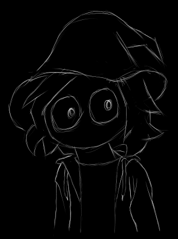

I'm somewhat eager that you are visiting my "neocities" website. Welcome, stranger! I'll make this as long as I can since about mes are typically difficult for me anyways... well... after making this website... it seems... easier? ¯\_(ツ)_/¯.
so uh where to start... (・―・)
I am introverted, nonchalant, and open minded, 24/7. Most of the time I am quite silly. I have few hobbies but I cherish what I am capable of. After all...
"Jack of all trades, master of none...is better than master of one"
Below you can continue reading and find my hobbies.
It is stereotypical that most neocities, most strawpages, and other similar website hosting services have one thing in common... artists! (well i mean you make the website and therfore you are an artist of some sorts so like this statement sucks)
Although sometimes I don't feel like an artist, I am one and I yearn for art, even if I don't feel it for long periods of time. Naturally, I should have a place to share my art when I feel comfortable and that place should be here somewhere hmmm...
psst... check projects...
You know, this is such a popular hobby that I would consider not putting it here anyways. Then I realize how diverse video games have gotten as of late. This has convinced me to provide a list of my favorite games of all time. Additionally, I shall plug my steam page here :)
No, I don't make music. I listen to music, alot of music. On my previous website, I would have a wide selection of tracks to quickly listen to for a few seconds. Here I cannot do this but I encourage you to check out my playlist that has over 3000+ tracks (quality may vary). Anyways, below are some of my current favorties.
So that's it... yeah, uh thanks for reading... Go check out everything else there is to offer here.